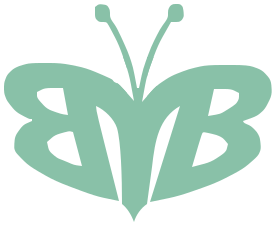

0% · Carga
0% · CargaVistiendo
al futuro.
Ropa y textiles para bebésFabricación propia · desde 1998
La fotografía ocupa el viewport de borde a borde. El primer scroll revela los dos accesos comerciales y activa un vuelo breve de la mariposa antes de liberar el hero hacia Colecciones.
Estado inicial · sin mariposaRopa y textiles para bebésFabricación propia · desde 1998
El hero permanece fijo durante un tramo corto. La composición fotográfica no salta: cambian la presencia de los CTAs y la posición de la mariposa. Las curvas y áreas punteadas son anotaciones.
0% · CargaRopa y textiles para bebésFabricación propia · desde 1998
42% · Pin activoRopa y textiles para bebésFabricación propia · desde 1998

96% · Listo para liberarRopa y textiles para bebésFabricación propia · desde 1998
La fotografía vertical se conserva sin convertirla en un recorte de escritorio. El texto y los CTAs quedan debajo del bebé; el vuelo sucede en el corredor derecho de la imagen.
 0% · Inicio
0% · InicioRopa y textiles para bebésFabricación propia · desde 1998
40% · Pin activoRopa y textiles para bebésFabricación propia · desde 1998
94% · UnpinRopa y textiles para bebésFabricación propia · desde 1998
La versión articulada reutiliza exactamente el trazado histórico tres veces y lo separa mediante máscaras. En reposo reconstruye la misma silueta; no introduce una mariposa nueva ni redibuja la marca.
#left-wing#body#right-wing#butterflyPropuesta conceptual pendiente de aprobación. Las líneas, puntos, zonas seguras, estados repetidos y rótulos no forman parte de la interfaz final. No se modificó la aplicación ni se implementó la animación.